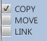
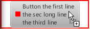
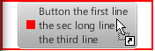
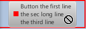

This test verifies drag and drop transfer modes.
Test application consists of two windows. The first window has title "Source", the second one has title "Target".
Source and Target windows contain "source/target transfer mode" checkboxes (Copy, Move, Link).
You should choose transfer modes in source and target windows according to testcase, then drag button with mouse from green frame from "Source" window to button in red frame in "Target" window. When mouse is over target button cursor will be changed. If testcase specify keyboard key, press such key as well. If cursor appears as expected in all testcases press pass, overwise fail.
| Testcase | Source checked | Target checked | Keyboard key | Expected mouse view |
|---|---|---|---|---|
| 1. Copy only | Copy | Copy |  | |
| 2. Move only | Move | Move | ||
| 3. Link only | Link | Link |  | |
| 4. All | Copy, Move, Link | Copy, Move, Link | ||
| 5. No source | Copy, Move, Link | Cursor is not changed. In log should appear "Cannot start drag and drop." | ||
| 6. No target | Copy, Move, Link |  | ||
| 7. All with alt | Copy, Move, Link | Copy, Move, Link | Alt | |
| 8. All with ctrl | Copy, Move, Link | Copy, Move, Link | Ctrl | |
| 9. Part 1 | Move | Copy, Link | Ctrl | |
| 10. Part 2 | Move, Link | Copy | Ctrl |